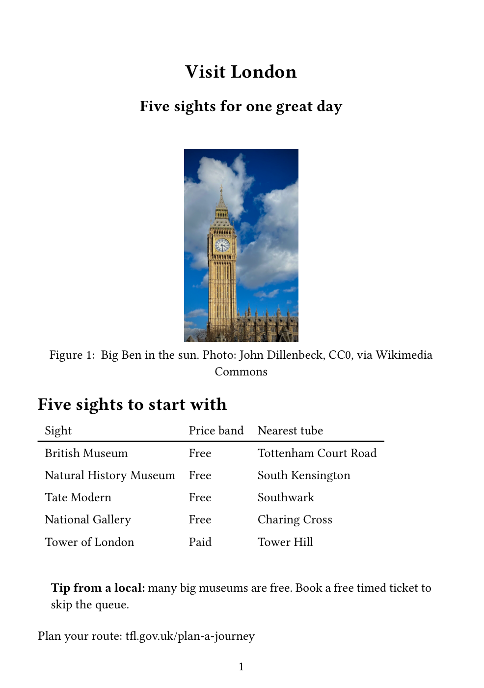
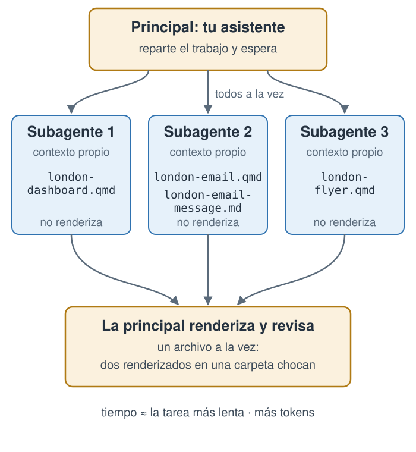
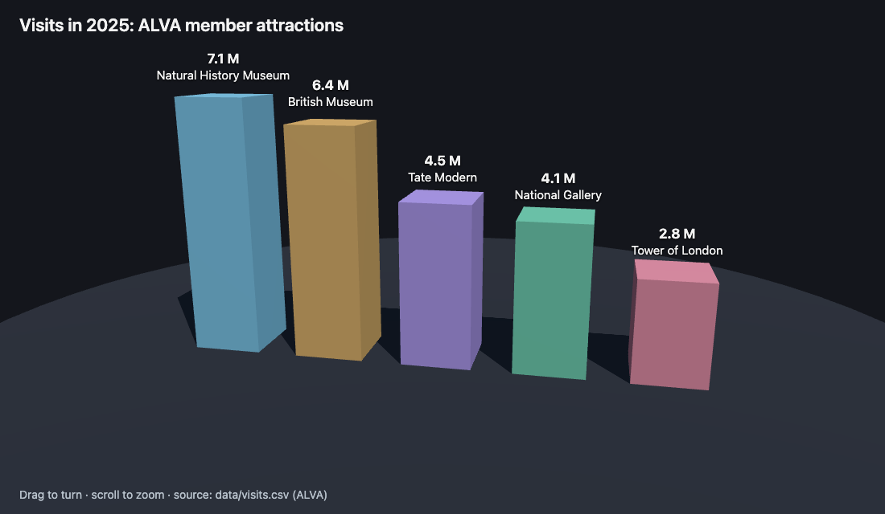

8 Una guía, cinco públicos
Quarto, publicación reproducible, agentes de programación, Markdown, Python, EPUB, análisis de datos, k-means
Corrige un dato y luego cuenta los documentos que lo repiten. Hechos a mano, un dashboard, un informe para socios y un folleto impreso tienen cada uno su propia copia de los mismos datos, y hay que encontrar y corregir cada copia. La que se pasa por alto es la que contradice a las demás en público.
Este capítulo escribe los tres en un solo paso: un dashboard para la gerencia, un informe en Word y su correo de presentación para los socios, y un folleto para quienes entran de la calle. El dashboard y el informe leen el mismo archivo de datos, así que un conteo corregido llega a los dos; el folleto copia sus datos de data/sights.csv, una decisión a la que vuelve la Sección 9.5. Ninguno de los tres necesita que exista otro, y eso los convierte en el primer trabajo de este libro que vale la pena repartir entre varios agentes a la vez, y en la primera oportunidad de preguntarse cuándo eso vale lo que cuesta.
Que sea correcto no basta. Un documento cumple su función solo cuando su lector se involucra con él, y cada lector se lo encuentra de una manera distinta: alguien de la gerencia recorre un dashboard en segundos, un socio reenvía un informe, alguien que pasa le echa un vistazo a un folleto. Así que cada formato de aquí se elige según cómo lo va a usar su lector, y la prueba para cada salida es la misma: ¿ese lector lo leería, y actuaría en consecuencia?
- Elegir un formato para cada público, y configurarlo.
- Decidir cuándo los subagentes valen lo que cuestan, y pedírselos de forma segura.
- Revisar cada salida como la usaría su lector.
- Juzgar cuándo un bloque de Typst sin procesar o un gráfico 3-D se ganan su lugar.
8.1 El contenido una vez, un formato por público
Cada público recibe el formato que le conviene, y cada formato es una opción de configuración. Este capítulo hace las tres primeras salidas de la Tabla 8.1 y el anuncio opcional; el Capítulo 9 hace el sitio web.
| Público | Salida | Opción |
|---|---|---|
| Gerencia | dashboard | dashboard |
| Socios | informe en Word y correo | docx |
| Quienes entran de la calle | folleto A5 (PDF) | typst, papersize: a5 |
| Redes sociales | anuncio cuadrado | tamaño de página en Typst sin procesar |
| Visitantes | sitio web | type: website |
Un dashboard es una página de gráficos y cifras clave organizados en una cuadrícula. En un archivo .qmd con format: dashboard, un título de nivel 1 empieza una página, un título de nivel 2 empieza una fila, y la salida de cada celda se convierte en una tarjeta de esa fila (documentación de dashboards de Quarto, consultada el 2026-10-31). El dashboard de la guía tiene dos páginas; su estructura, sin el código, es:
# Attractions
## Row {height=25%}
::: {.valuebox icon="trophy" color="primary"}
Most visited: `{python} top_name`
:::
## Row
# Churches# Attractions y # Churches empiezan las dos páginas, y {height=25%} le da a la primera fila un cuarto de la altura de la página. Esa fila contiene los cuadros de valor, cada uno con una cifra clave, una etiqueta y un ícono; la fila siguiente contiene los gráficos, una tarjeta por celda. Un cuadro de valor se escribe como un div: un bloque de Markdown entre dos líneas de tres signos de dos puntos, cuya clase entre llaves, .valuebox, le dice a Quarto qué hacer con él. Los otros bloques especiales de Quarto, como los recuadros (callouts), usan la misma sintaxis.
![Un dashboard en inglés titulado London attractions dashboard, con las pestañas Attractions y Churches. Tres cuadros de valor: la atracción más visitada, el Natural History Museum, con sus visitas de 2025; el total de visitas a las diez; y cuántas de las diez tienen entrada gratuita. Debajo, un gráfico de barras horizontales de las visitas de 2025 a las diez atracciones miembro de ALVA más visitadas de Londres, y un gráfico de líneas de las visitas por año de 2015 a 2025 para cinco atracciones, con una caída profunda en 2020 y 2021.](../media/figures/london-dashboard.png)
examples/london/london-dashboard.qmd.
También necesita un segundo archivo de datos. data/visits.csv contiene las visitas anuales a las cinco atracciones de 2015 a 2025, de las tablas anuales de ALVA. Lo acompañan dos notas, del README de los datos. Los años 2020 y 2021 son años de pandemia, no comparables con los demás. Y desde 2024 el conteo del Natural History Museum incluye sus jardines reabiertos, así que, para ese museo, 2024 y 2025 no son comparables con los años anteriores. data/churches.csv enumera las diez catedrales e iglesias de la propia lista de Visit London, una elección editorial sin cifras de visitantes.
Un informe en Word convierte los títulos de Markdown en los estilos de título de Word, así que la copia del socio tiene un esquema navegable y enlaces que funcionan. Su correo de presentación no se renderiza: es un archivo de Markdown simple cuyo mensaje está en un bloque text, para copiarlo en un cliente de correo, con el informe adjunto. El correo a propósito no cita ninguna cifra de visitantes. Las cifras se quedan en el informe, donde se calculan y se citan, como exigen las reglas del proyecto.
Un folleto es un PDF de Typst de una página en papel A5. papersize acepta cualquiera de los nombres de papel de Typst (a5, a4, us-letter, etc.), y margin fija los márgenes (documentación de Typst de Quarto, consultada el 2026-10-30).

examples/london/london-flyer.qmd.
8.2 Subagentes: una sesión principal, muchas manos
Las tres salidas son independientes: ninguna necesita que exista otra. Eso las hace candidatas para los subagentes, sesiones de agente separadas que tu agente inicia para una tarea cada una (Figura 8.3). Cada subagente tiene su propio contexto, hace su tarea e informa; tu agente, la sesión principal, los espera a todos y luego revisa los resultados.

La ganancia es tiempo: tres tareas independientes tardan más o menos lo que la más lenta de ellas. El costo son tokens, porque cada subagente hace su propia lectura, su propio razonamiento y sus propias llamadas a herramientas. Los cuatro agentes lo ofrecen de maneras distintas (consultado el 2026-10-31; OpenCode, el 2026-11-20). Claude Code inicia subagentes en paralelo cuando un prompt los pide. Codex tiene los subagentes activados por defecto y los inicia cuando se le pide, y su documentación advierte tanto que las ediciones en paralelo “pueden crear conflictos” como que las ejecuciones de subagentes usan más tokens. El agente de línea de comandos de Antigravity puede delegar en subagentes en paralelo, pero su documentación no dice que un prompt pueda exigirlo, así que puede hacer las tareas por su cuenta. Los subagentes de OpenCode corren en sus propias sesiones y siempre en segundo plano, y le informan al agente principal cuando cada uno queda inactivo; su documentación no dice que el principal los espere, así que con OpenCode comprueba que todos los archivos existan antes de que el principal renderice.
Dos reglas hacen seguro el trabajo en paralelo, y el prompt de abajo dice las dos. Cada subagente escribe solo sus propios archivos y no renderiza nada, así que dos de ellos nunca tocan el mismo archivo. La sesión principal renderiza los archivos uno por uno, porque dos renderizados de Quarto, o dos actualizaciones del entorno por uv run, en la misma carpeta pueden chocar. Los subagentes también leen AGENTS.md, así que las reglas del proyecto se siguen aplicando a su trabajo.
Usa subagentes cuando las tareas sean independientes, sustanciales y escriban archivos distintos. No los uses para tareas en las que una necesita el resultado de otra, para varias ediciones del mismo archivo ni para tareas pequeñas en las que el costo de iniciar e instruir a un subagente supera al trabajo. Un prompt que podría ejecutarse sin subagentes debería decir qué hacer en ese caso: el prompt de abajo termina su primera oración con “¿no hay? haz los elementos uno tras otro”.
La oficina también quiere la guía en francés y en español, cada una en un archivo nuevo hecho a partir de london.qmd. ¿Es un trabajo para subagentes?
Sí: las dos traducciones son independientes, sustanciales y escriben archivos distintos (por ejemplo, london-fr.qmd y london-es.qmd), y la sesión principal las renderiza una por una. Si las dos necesitaran primero una lista compartida de nombres de lugares, escribe esa lista primero y luego reparte el trabajo.
8.3 Un prompt, tres públicos
Ejecuta tres subagentes en paralelo, uno por elemento (¿no hay? haz los elementos uno tras otro). Cada uno lee london.qmd, data/ e images/, oculta el código, sigue AGENTS.md y solo escribe sus propios archivos: nada de renderizar. Los textos de las salidas, en inglés.
1. london-dashboard.qmd (format: dashboard): página Attractions (cuadros de valor: la atracción más visitada, el total de `visits_2025`, cuántas son gratuitas; barras de Plotly por atracción; una línea de Plotly de las visitas por `year` desde data/visits.csv; termina cada celda de gráfico con `fig`, asignando `fig = fig.update_layout(…)`); página Churches (data/churches.csv, con los nombres enlazados a `visit_london`).
2. london-email.qmd: un informe docx para socios (las cifras de 2025 como código en línea, las cinco atracciones con sus enlaces oficiales, cómo moverse, fuentes); london-email-message.md: su correo de presentación en un bloque text, sin cifras.
3. london-flyer.qmd: una página A5 de Typst (papersize: a5): la foto del Big Ben, las cinco atracciones con su rango de precio y su metro más cercano, el consejo de un local.
Luego renderiza tú los tres archivos .qmd, uno por uno, y revisa cada uno.inicia tres subagentes · espera · renderiza los tres archivos .qmd uno por uno
apruebas sus comandos · abres las cuatro salidas
Los renderizados de la sesión principal son uv run quarto render london-dashboard.qmd, luego london-email.qmd y luego london-flyer.qmd, y va informando el avance de cada subagente. El prompt es largo porque son tres especificaciones en una, cada una tan concreta como lo sería un prompt individual. La sesión principal revisa cada archivo que renderiza; las revisiones de la oficina son tuyas. Abre cada salida como lo haría su lector: ¿alguien de la gerencia encuentra la atracción más visitada sin leer una oración?, ¿un socio puede reenviar el informe y su correo tal como están?, ¿el folleto cabe en una página A5?
Luego revisa tú las dos reglas antes de hacer commit. git status debería enumerar los cuatro archivos nuevos que nombró el prompt, london-dashboard.qmd, london-email.qmd, london-email-message.md y london-flyer.qmd, y nada más: ningún cambio en london.qmd, data/ ni images/, y ninguno de los archivos renderizados, que .gitignore deja afuera. Un subagente que se salió de sus propios archivos aparece aquí, diga lo que diga el informe de la sesión principal. Luego git add . y haz commit con un mensaje que diga por qué.
Un socio pide el total de visitas de este año en el propio correo de presentación. ¿Dónde debería ir el número, y por qué?
En el informe, como código en línea, y el correo remite a él. El correo es un archivo de Markdown simple que nunca se renderiza, así que un número escrito ahí es una copia que no va a seguir a los datos.
“Termina cada celda de gráfico con fig” está ahí por una falla vista en la práctica: un gráfico de Plotly aparece dos veces en una tarjeta del dashboard cuando la celda llama a fig.show() y además devuelve la figura. Asigna la figura, termina la celda con su nombre, y nada más. Si la leyenda de un gráfico se ve cortada, pide una leyenda horizontal con un entrywidth fijo; si el folleto se pasa a una segunda página, pide una foto más pequeña.
8.4 Un anuncio cuadrado (opcional)
Crea london-social.qmd: una página cuadrada de Typst de 12 cm (tamaño de página en Typst sin procesar) para redes sociales: "Visit London", la foto del Big Ben, la atracción más visitada y sus `visits_2025`. Oculta el código, sigue AGENTS.md, renderízalo y comprueba que el PDF sea una sola página cuadrada.Typst no tiene un nombre de papel cuadrado, así que el tamaño de página se fija en un bloque de Typst sin procesar, que Quarto le pasa intacto a Typst. La foto del anuncio terminado llega hasta los bordes, así que su página no tiene margen:
```{=typst}
#set page(width: 12cm, height: 12cm, margin: 0cm,
numbering: none, fill: rgb("#0b2545"))
#set text(fill: white)
```
examples/london/london-social.qmd.
Todo lo que hay en la página lo coloca Typst sin procesar: la foto llena el cuadrado (fit: "cover"), un rectángulo con un degradado azul marino oscurece su mitad inferior y place() ubica el borde, el texto y la insignia. Los datos se siguen calculando. Una celda de Python lee attractions.csv y los imprime como variables de Typst (#let top-name = "Natural History Museum"), que usa el diseño, así que un conteo corregido llega al anuncio en el siguiente renderizado como a cualquier otra salida.
El anuncio terminado no tiene título ni título de nivel 1: cualquiera de los dos caería en una página del tamaño por defecto antes de la cuadrada. Esto se probó con Quarto 1.10.20 y su Typst integrado el 2026-11-12. Un bloque sin procesar es una salida de emergencia útil, y costosa: ata la fuente a un solo formato, así que úsalo solo para lo que la configuración del formato no puede expresar.
Si el anuncio no sale como una sola página cuadrada, sáltatelo: nada de lo que sigue depende de él. La versión terminada es ../quarto-workshop/examples/london/london-social.qmd, que puedes copiar a tu carpeta y renderizar.
8.5 Las atracciones en tres dimensiones (opcional)
Los datos de la guía también se pueden dibujar como un mapa: las cinco atracciones como columnas tan altas como sus visitas de 2025, las diez iglesias de Visit London como marcadores bajos y los distritos de Londres alrededor del Támesis (Figura 8.5). Nada cambia en el proyecto: la escena se dibuja a partir de los mismos archivos. La columna más alta es la del Natural History Museum, con 7.1 millones de visitas; la única atracción de pago es la Tower of London.
Esta vista 3-D necesita WebGL. Visitas en 2025: Natural History Museum 7,116,929; British Museum 6,440,120; Tate Modern 4,514,266; National Gallery 4,147,544; Tower of London 2,817,852.
Cada punto, altura y límite se calcula a partir de los archivos del proyecto: las coordenadas de data/places.csv (de Wikidata, CC0), las visitas de data/visits.csv, los rangos de precio de data/sights.csv y los límites de los distritos de la Office for National Statistics, recortados en la línea de pleamar para que el Támesis, con sus mareas, aparezca como el hueco entre los distritos de sus dos orillas. Un script escrito para las diapositivas del taller, con la biblioteca three.js, solo los dibuja. Los tonos de los distritos distinguen a los vecinos y no codifican ningún dato.
8.5.1 Pedir three.js
No necesitas saber three.js para pedirlo. Nombra la biblioteca, los datos y lo que quieres hacer con el resultado, y revisa los números:
Crea visits-3d.html con `three.js` desde una CDN: una barra 3-D con etiqueta por cada `attraction` de data/visits.csv, tan alta como sus `visits` en el `year` más reciente, que pueda arrastrar para girarla. Pon los números dentro de la página para que se abra con doble clic, y luego compruébalos contra el CSV.
three.js es una biblioteca de JavaScript gratuita (licencia MIT) que dibuja escenas 3-D con WebGL, los gráficos 3-D integrados en el navegador, así que quien lee no instala nada. Dos detalles del prompt importan. Pide que los números se escriban dentro de la página, porque una página abierta con doble clic no puede leer archivos locales. Y la página carga three.js desde una red de distribución de contenidos (CDN), así que necesita internet para funcionar; una página publicada conserva esa dependencia, y por eso este libro, como las diapositivas del taller, lleva su propia copia de la biblioteca.
Un gráfico 3-D tiene que ganarse su tercera dimensión. La perspectiva hace que las barras sean más difíciles de comparar que en un gráfico de barras simple: la barra cercana parece más alta que una igual que está detrás. La Figura 7.2 es el mejor gráfico para comparar visitas. Usa el 3-D cuando la tercera dimensión signifique algo, como la altura en un mapa, o por gusto, y di cuál de las dos.
Resumen
- El formato de cada público es una opción de configuración: un dashboard, un informe en Word, un folleto A5.
- Las salidas cuyo código lee los datos siguen a los datos; los datos copiados del folleto, no.
- Los subagentes sirven para tareas independientes y sustanciales que escriben archivos distintos.
- Cada subagente escribe solo sus propios archivos; la sesión principal renderiza uno por uno.
- Abre cada salida como lo haría su lector: las revisiones de la sesión principal no reemplazan las tuyas.
La oficina ahora tiene una versión de la guía para cada lector menos uno, y todas están en tu computadora. Los visitantes necesitan un sitio web: el capítulo siguiente publica uno y luego cambia un número para probar si de verdad cada lector recibe el mismo dato.
Lecturas adicionales
- Quarto, Dashboards y dashboard layout (consultados el 2026-10-31).
- Quarto, Typst page layout; Typst, page settings (consultados el 2026-11-12).
- Los subagentes en Claude Code, Codex y Antigravity (consultados el 2026-10-31), y OpenCode (consultado el 2026-11-20).
- three.js y su galería de ejemplos (consultados el 2026-11-06).